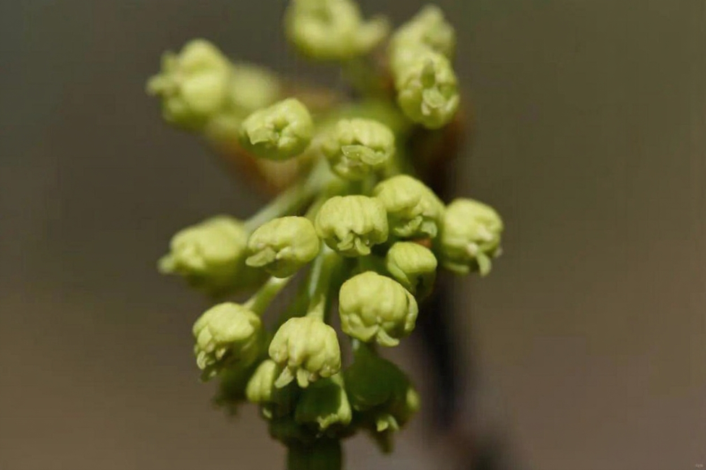

📇
基础名片
Basic Info
漾濞槭
学名：Acer yangbiense
科属：无患子科槭属
保护级别：濒危（EN）、国家二级保护植物
学名：Acer yangbiense
科属：无患子科槭属
保护级别：濒危（EN）、国家二级保护植物
🌿
形态特征
Morphology
形态特征
落叶大乔木；
株：成年植株可高达15–20米，胸径可达30–60厘米，树皮呈灰褐色，较为光滑；
叶：叶纸质，掌状5浅裂，叶片基部心形，叶面无毛、背面密布灰白色绒毛，沿叶脉处绒毛更浓密；裂片先端渐尖，边缘全缘或具不明显疏齿；叶柄长4–17厘米，同样被灰白色柔毛；
花：；先花后叶，每年3–4月开花，花序下垂呈黄绿色，形似小铃铛；花有性别分化，可出现雄花、两性花同株或异株的情况，雌株数量稀少；
果：翅果（坚果具翅），果序下垂，幼果红绿色，成熟后变为黄褐色；坚果直径约7毫米，两翅张开呈钝角，形似“金元宝”；
种子：每颗坚果内含1粒种子，种子随翅果风力传播，自然萌发率较低；
落叶大乔木；
株：成年植株可高达15–20米，胸径可达30–60厘米，树皮呈灰褐色，较为光滑；
叶：叶纸质，掌状5浅裂，叶片基部心形，叶面无毛、背面密布灰白色绒毛，沿叶脉处绒毛更浓密；裂片先端渐尖，边缘全缘或具不明显疏齿；叶柄长4–17厘米，同样被灰白色柔毛；
花：；先花后叶，每年3–4月开花，花序下垂呈黄绿色，形似小铃铛；花有性别分化，可出现雄花、两性花同株或异株的情况，雌株数量稀少；
果：翅果（坚果具翅），果序下垂，幼果红绿色，成熟后变为黄褐色；坚果直径约7毫米，两翅张开呈钝角，形似“金元宝”；
种子：每颗坚果内含1粒种子，种子随翅果风力传播，自然萌发率较低；
🌱
生长环境
Habitat
生长环境
产地：云南（漾濞县、云龙县、哀牢山片区等）；
特有：中国云南特有物种，为极度濒危的单种属类群；
生境：沟谷混交林、常绿阔叶林阴坡，多生于溪流附近；
海拔：1800–2500m；
物候：先花后叶，花期3–4月，果期9–10月；花具性别分化，雌株稀少，自然更新困难；
产地：云南（漾濞县、云龙县、哀牢山片区等）；
特有：中国云南特有物种，为极度濒危的单种属类群；
生境：沟谷混交林、常绿阔叶林阴坡，多生于溪流附近；
海拔：1800–2500m；
物候：先花后叶，花期3–4月，果期9–10月；花具性别分化，雌株稀少，自然更新困难；
💊
价值作用
Value
价值作用
观赏价值:
树形优美，叶形独特，秋季叶色变红，极具园林观赏潜力。
研究价值:
对研究槭树科系统发育、物种演化及濒危机制有重要意义。
观赏价值:
树形优美，叶形独特，秋季叶色变红，极具园林观赏潜力。
研究价值:
对研究槭树科系统发育、物种演化及濒危机制有重要意义。

野生漾濞槭云南分布情况
野生漾濞槭的数量变化